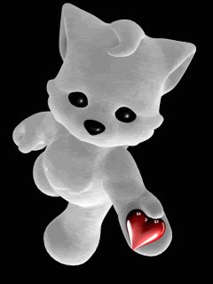

Hie Dear,
This is my first letter for you. U can call it as a love letter from myside :p I remember the first day when I saw you in FACT 14th July 2015 and I was totally flattered over u. I still remember u wearing a Black Top and u were looking fabulous. I saw u smiling initially when the lecture started and I just kept staring at u the whole lecture though u had a pakofied face by the end of lecture (haha). That was the time and the day when I fell in love with u - "LOVE AT FIRST SIGHT". Eventually we became friends, I got to know u as a person and loved u more.
There's always a first time the way this website is. I never thought of making a sketch for any girl. That thought was instant and I tried for it and it was a success, hopefully. It was all because of you coz u r my inspiration for that sketch. While making that sketch all ur small details like smile, eyebrows, sweet eyes, ur facial expressions, voice, tone were running through my mind which made my love strong for u and I know from bottom of my heart that u r the one with whom I can spend my whole life.
I know I never stop expressing my feelings for u even after saying that I will stop. That's coz I madly love u and I dnt want to let go without any efforts. We met last day and I still remember ur sentence "teresath rehke bhi muze kisi aur se pyaar ho gaya toh". I can assure u will never go on that path coz I will never let u go away from me. I will always maintain ur 100% trust which will not let u love somebody else that's my promise and u will always love me as ur soul mate.
Poonam everybody has a past. I had and even u had few things, but we should not think over it. I want to spend our present and whole future together. May be I am not that appealing personality or the sapno ka rajkumar types but I can promise u swearing on my mom and dad that I will never leave u anyday in midst and will never ever hurt u or let u drop a single tear from ur eyes. I wish to spend my whole life with you. You just need to take one step ahead and u will always find me with u in every instance of life. M very much serious for you and will follow all my words that I have written today. U will not feel like u r in pinjra or so...
